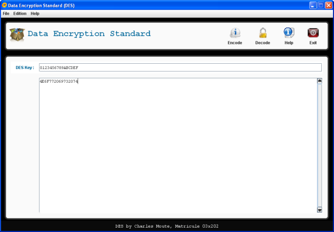
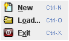

Data Encryption Standard
L'interface de DES, dont la représentation graphique est :

,est constitué de trois grandes parties :
Principe: La méthode d'utilisation est la suivante :
- Pour chiffrer : saisir la clé dans la zone clé(petite zone de texte ) et le texte à chiffer dans la zone de texte la plus grande. Afin de vous assurez que le message qui sera chiffré est bien un message ascii, tapez CTRL+R, tous les caractéres non reconnus seront remplacés par un point d'interrogation. Une fois assuré du message qui sera réellement chiffrer, tapez CTRL+L pour lancer le chiffrement de votre message.
- Pour déchiffrer: saisir la clé de déchiffrement et le texte à déchiffrer.
NB: le texte à chiffrer ou à déchiffrer peut être un chaine binaire, à la place d'un texte en claire, du moment que sa taille est un multiple de 64. Nous vous conseilllons, d'ailleurs de préférer la representation binaire au representation en claire, ceci dans le but d'éviter d'éventuelles erreures dûes aux opérations de copie et de collage.
Trois menu sont a distinguer :
- File regroupant les actions standards d'une application.
- Edition regroupant les fonctionnalités que DES offre.
- Help permettant d'avoir accés a un à propos et à cette aide.

Ce menu est constitué des sous-menus suivant :
- New (CTRL-N) : Permet de réinitialiser la zone de travail de l'application.
- Load (CTRL-O): Charge le contenu d'un fichier dans la zone texte de la zone de Travail.
Ce contenu devrait être du texte AScii, au risque de voir une incohérence entre le message réellement chiffré et le message que l'on souhaite chiffrer. Utilisez le sous-menu Spelling du menu Edition, pour effectuer cette vérification et vous assurez que le message réellement chiffré et bien le message que vous avez saisi.
- Exit (CTRL-X): Quitte l'application.

Ce menu est constitué des sous-menus suivant :
- Encode (CTRL-L) : Lance le chiffrement du texte, de la zone texte , avec la clé de la zone clé.
- Decode (CTRL-U) : Lance le déchiffrement du texte avec la clé fournie. Le texte à déchiffrer doit être une suite binaire (suite de un et de zéro).

Ce menu est constitué des sous-menus suivant :
- About (CTRL-I) : Donne une description bréve sur l'application.
- Manual(CTRL-M) : Donne accés à cette fenêtre d'aide.
La barre d'outils est contituée des boutons suivants :
- permet de lancer l'opération de chiffrement
- permet de lancer l'opération de déchiffrement
- permet d'ouvrir/fermer la fenêtre du manuel d'aide.
- permet de fermer l'application.
Les boutons et ouvrent tous les deux une fenêtre présentant le résultat de l'opération effectuée. Cette fenêtre posséde deux boutons permettant l'affichage d'un résultat en suite binaires ou en texte Ascii, et une zone de texte où figure le résultat des différentes opérations. La zone de texte posséde un menu contextuel, accessible d'un click droit sur cette derniére. Ce menu contextuel permet entre autre :
- De sélectionner tout le texte résultat.
- De supprimer tout le texte.
 De copier le texte sélectionner.
De copier le texte sélectionner.- De couper le texte sélectionner.
- D'enregistrer le texte résultat.
- D'imprimer le texte résultat.
La zone de travail est constituée de deux parties :
- La zone clé, qui est la plus petite zone de texte. Elle est la zone où la clé de chiffrement ou de déchiffrement doit être saisie.
- La zone texte, qui est la plus grande zone de texte. Elle est la zone où le message à chiffrer ou à déchiffrer doit être saisie.
La zone texte posséde un menu contextuel, accessible à partir d'un click droit sur cette derniére.Ce menu est ainsi constitué :
- De sélectionner tout le texte résultat.
- De supprimer tout le texte.
- De copier le texte sélectionner.
- De couper le texte sélectionner.
Copyright 2010 Charles Mouté